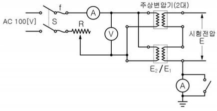
가. 절연내력시험 전압은 몇 [V]이며, 이 시험전압을 몇 분간 가하여 이에 견디어야 하는가? (4점)
나. 시험시 전압계 ⑥으로 측정되는 전압은 몇 [V]인가? (3점)
다. 도면에서 오른쪽 하단의 접지되어 있는 전류계는 어떤 용도로 사용되는가? (1점)
[1번 해설] 단순 계산형 + 단답 암기형 / 난이도 中下
[정답]
가. 절연내력시험 전압은 몇 [V]이며, 이 시험전압을 몇 분간 가하여 이에 견디어야 하는가?
[계산과정] V = 6900 \(\times\) 1.5 = 10350 [V]
[정답] 10350 [V]
나. 시험시 전압계 ⑤로 측정되는 전압은 몇 [V]인가?
[계산과정] $V = 10350 = 86.25 [V] $
[정답] 86.25 [V]
다. 도면에서 오른쪽 하단의 접지되어 있는 전류계는 어떤 용도로 사용되는가?
[정답] 누설 전류의 측정
[부분점수]
| 점수 | 세부기준 |
|---|---|
| 8점 | 소문항 3개 중 계산과정과 정답이 모두 맞으면 8점 획득 |
| 3점 | 소문항 가-(1)와 나의 계산과정과 정답이 모두 맞으면 소문항당 각각 3점 획득 |
| 1점 | 소문항 가-(2)와 다의 정답이 맞으면 소문항당 각각 1점 획득 |
| 0점 | 소문항 3개 모두 계산과정과 정답에 오류가 있는 경우 |
단락전류 보호장치는 분기점(○)에 설치해야 한다. 다만, 아래 그림과 같이 분기회로의 단락보호장치 설치점(B)과 분기점(O) 사이에 다른 분기회로 또는 콘센트의 접속이 없고 단락, 화재 및 인체에 대한 위험이 최소화될 경우, 분기회로의 단락 보호장치 P2는 분기점(O)으로부터 (①) m까지 이동하여 설치할 수 있다.
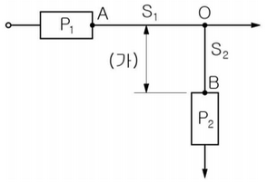
[2번 해설] 단답 암기형 / 난이도 下
[정답] ① 3 [m]
[부분점수] 부분 점수 없음
[해설] KEC 212.5.2 단락보호장치의 설치위치
단락전류 보호장치는 분기점(O)에 설치해야 한다. 다만, 아래 그림과 같이 분기회로의 단락보호장치 설치점(B)과 분기점(O) 사이에 다른 분기회로 또는 콘센트의 접속이 없고 단락, 화재 및 인체에 대한 위험이 최소화될 경우, 분기회로의 단락 보호장치 P2는 분기점(O)으로부터 3[m]까지 이동하여 설치할 수 있다.
[3번 해설] 단답 암기형 / 난이도 下
[정답] ① 발전효율이 높다. (효율이 높고, 용량 조절이 가능)
② 대기 오염물질 배출이 거의 없다. (친환경)
③ 진동이나 소음이 없다.
④ 계속해서 충전이 가능하다.
[부분점수]
| 점수 | 세부기준 |
|---|---|
| 5점 | 정답 3개 모두 맞으면 5점 획득 |
| 4점 | 정답 3개 중 2개 맞으면 4점 획득 |
| 2점 | 정답 3개 중 1개 맞으면 2점 획득 |
| 0점 | 정답 3개 모두 틀리면 0점 |
[정답]
[4번 해설] 단순 계산형 / 난이도 中下
[계산과정] 소선의 총수 N = 3n(n+1) + 1 = 37가닥이므로 층수 n=3이다. 따라서 연선의 바깥지름
\[ D = (2n+1)d = (2 \times 3 + 1) \times 3.2 = 22.4 \text{[mm]} \]
[정답] 22.4[mm]
[부분점수]
| 점수 | 세부기준 |
|---|---|
| 5점 | 계산과정과 정답이 모두 맞으면 5점 획득 |
| 0점 | 계산과정과 정답에 오류가 있는 경우 |
| 가. 고장시 2차전류에 의한 트립방식 | |
| 나. 고장시 콘덴서 충전전하에 의한 트립방식 | |
| 다. 고장시 전압의 저하에 의한 트립방식 |
[5번 해설] 단답 암기형 / 난이도 下
[정답] 가. 과전류 트립방식 나. 콘덴서 트립방식 다. 부족전압 트립방식
[부분점수]
| 점수 | 세부기준 |
|---|---|
| 6점 | 소문항 3개 중 정답이 모두 맞으면 6점 획득 |
| 4점 | 소문항 3개 중 정답이 2개 맞으면 4점 획득 |
| 2점 | 소문항 3개 중 정답이 1개 맞으면 2점 획득 |
| 0점 | 소문항 3개 중 정답이 모두 틀리면 0점 |
[참고] 직류 전압 트립 방식 : 별도로 설치된 축전지 등의 제어용 직류 전원의 에너지에 의하여 트립되는 방식
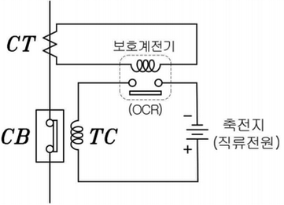
[정답]
[6번 해설] 복합 계산형 / 난이도 上
[계산과정] 분담되는 전력을 \(P_a, P_b\), 변압기 용량을 \(P_A, P_B\), 각 변압기의 %임피던스를 \(\%Z_a, \%Z_b\)라 하고 각 변압기 %임피던스는
\[ \%Z*a = \frac{P*{Za}^2}{10V^2} = \frac{30 \times \sqrt{0.03^2 + 0.04^2}}{10 \times 0.22^2} = 3.1, \]
\[ \%Z*b = \frac{P*{Zb}^2}{10V^2} = \frac{20 \times \sqrt{0.03^2 + 0.06^2}}{10 \times 0.22^2} = 2.77 이며 \]
\[ 부하분담비 \frac{P_a}{P_b} = \frac{P_A}{P_B} \times \frac{\%Z_b}{\%Z_a} = \frac{30}{20} \times \frac{2.77}{3.1} = 1.342, \]
$ P_b = \(이고, 2차측 부하\) P_a + P_b = 40[kVA]$이므로
\[ P_a + \frac{P_a}{1.342} = 40[kVA] 따라서, P_a = \frac{40}{1 + \frac{1}{1.342}} = 22.92[kVA] \]
[정답] 22.92[kVA]
[부분점수]
| 점수 | 세부기준 |
|---|---|
| 6점 | 계산과정과 정답이 모두 맞으면 6점 획득 |
| 0점 | 계산과정과 정답에 오류가 있는 경우 |
\[ 일 부하율 = \frac{\text{1일 사용전력량}}{\text{최대 전력} \times 24 \text{시간}} \times 100 [\%] \]
\[ 일 부하율 = \frac{192}{12 \times 24} \times 100 = \frac{192}{288} \times 100 \approx 66.67 [\%] \]
[정답] 66.67 %
$ P = V_L I_L $ 여기서, P는 전력, \(V_L\)은 선간 전압, \(I_L\)은 선전류, \(\cos{\theta}\)는 역률이다.
\[ 주어진 값: P = 12 kW, V_L = 220 V, I_L = 34 A \]
\[ \cos{\theta} = \frac{P}{\sqrt{3} V_L I_L} = \frac{12000}{\sqrt{3} \times 220 \times 34} \approx 0.877 \]
\[ 역률 = \cos{\theta} \times 100 [\%] = 0.877 \times 100 \approx 87.7 [\%] \]
[정답] 87.7 %
[7번 해설] 단순 계산형 / 난이도 中
[계산과정] $일부하율 = = = 66.67[%] $
[정답] 66.67[%]
[계산과정] $= = = 0.92623, $
역률[%] = 0.92623 × 100 = 92.62[%]
[정답] 92.62[%]
[부분점수]
| 점수 | 세부기준 |
|---|---|
| 6점 | 소문항 2개 중 2문항의 계산과정과 정답이 모두 맞으면 6점 획득 |
| 3점 | 소문항 2개 중 1문항의 계산과정과 정답이 모두 맞으면 3점 획득 |
| 0점 | 계산과정과 정답에 오류가 있는 경우 |
차단기 정격 용량 [MVA]
| 5800 | 6600 | 7300 | 9200 | 12000 |
|---|
계산 :
답 :
[8번 해설] 단순 계산형 / 난이도 中
\[ 차단용량 = \sqrt{3} \times \text{정격전류} \times \text{정격전압} = \sqrt{3} \times 24 \times 170 = 7066.77 \text{ [MVA]} \]
[정답] 7300[MVA] 선정
[부분점수]
| 점수 | 세부기준 |
|---|---|
| 5점 | 계산과정과 정답이 모두 맞으면 6점 획득 |
| 0점 | 계산과정과 정답에 오류가 있는 경우 |
출력비 :
이용률 :
[9번 해설] 단순 계산형 또는 단답 암기형 / 난이도 下
[정답]
출력비 : 57.74 [%] \(\frac{\sqrt{3}P}{3P} = \frac{\sqrt{3}VI}{3VI} = \frac{\sqrt{3}}{3} \times 100 = 57.735 \approx 57.74\) [%]
이용률 : 86.60 [%] \(\frac{\sqrt{3}P}{2P} = \frac{\sqrt{3}VI}{2VI} = \frac{\sqrt{3}}{2} \times 100 = 86.602 \approx 86.60\) [%]
[부분점수]
| 점수 | 세부기준 |
|---|---|
| 4점 | 소문항 2개 중 2문항의 정답이 맞으면 4점 획득 |
| 2점 | 소문항 2개 중 1문항의 정답이 맞으면 2점 획득 |
| 0점 | 소문항 2개 모두 정답과 맞지 않는 경우 |
[회로의 특성에 따른 요구사항]
중성선을 ( ① ) 및 ( ② )하는 회로의 경우에는 설치하는 개폐기 및 차단기는 ( ① ) 시에는 중성선이 선도체보다 늦게 ( ① ) 되어야 하며, ( ② ) 시에는 선도체와 동시 또는 그 이전에 ( ② ) 되는 것을 설치하여야 한다.
[정답]
[부분점수]
| 점수 | 세부기준 |
|---|---|
| 4점 | 소문항 2개 중 2문항의 정답이 맞으면 4점 획득 |
| 2점 | 소문항 2개 중 1문항의 정답이 맞으면 2점 획득 |
| 0점 | 소문항 2개 모두 정답과 맞지 않는 경우 |
[해설] KEC 212.2.3 중성선의 차단 및 재폐로
[회로의 특성에 따른 요구사항]
중성선을 차단 및 재폐로하는 회로의 경우에는 설치하는 개폐기 및 차단기는 차단 시에는 중성선이 선도체보다 늦게 차단되어야 하며, 재폐로 시에는 선도체와 동시 또는 그 이전에 재폐로 되는 것을 설치하여야 한다.
OCB:
ABB:
GCB:
MBB:
[11번 해설] 단답 암기형 / 난이도 下
[정답]
[부분점수]
| 점수 | 세부기준 |
|---|---|
| 4점 | 소문항 4개 중 4문항의 정답이 맞으면 4점 획득 |
| 3점 | 소문항 4개 중 3문항의 정답이 맞으면 3점 획득 |
| 2점 | 소문항 4개 중 2문항의 정답이 맞으면 2점 획득 |
| 1점 | 소문항 4개 중 1문항의 정답이 맞으면 1점 획득 |
| 0점 | 소문항 4개 모두 정답과 맞지 않는 경우 |
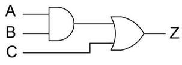
| A | B | C | Z |
|---|---|---|---|
| L | L | L | |
| L | L | H | |
| L | H | L | |
| L | H | H | |
| H | L | L | |
| H | L | H | |
| H | H | L | |
| H | H | H |
[12번 해설] 단순 계산형+개념 이해형 / 난이도 中下
[정답]
| 1 | 2 | 3 | 4 | 5 | 6 | 7 | 8 | |
|---|---|---|---|---|---|---|---|---|
| A | L | L | L | L | H | H | H | H |
| B | L | L | H | H | L | L | H | H |
| C | L | H | L | H | L | H | L | H |
| Z | L | H | L | H | L | H | H | H |
[부분점수]
| 점수 | 세부기준 |
|---|---|
| 5점 | 소문항 8개 중 8문항의 정답이 맞으면 5점 획득 |
| 4점 | 소문항 8개 중 6~7문항의 정답이 맞으면 4점 획득 |
| 3점 | 소문항 8개 중 4~5문항의 정답이 맞으면 3점 획득 |
| 2점 | 소문항 8개 중 2~3문항의 정답이 맞으면 2점 획득 |
| 1점 | 소문항 8개 중 1문항의 정답이 맞으면 1점 획득 |
| 0점 | 소문항 8개 모두 정답과 맞지 않는 경우 |
①
②
③
④
[정답]
[부분점수]
| 점수 | 세부기준 |
|---|---|
| 4점 | 소문항 4개 중 4문항의 정답이 맞으면 4점 획득 |
| 3점 | 소문항 4개 중 3문항의 정답이 맞으면 3점 획득 |
| 2점 | 소문항 4개 중 2문항의 정답이 맞으면 2점 획득 |
| 1점 | 소문항 4개 중 1문항의 정답이 맞으면 1점 획득 |
| 0점 | 소문항 4개 모두 정답과 맞지 않는 경우 |
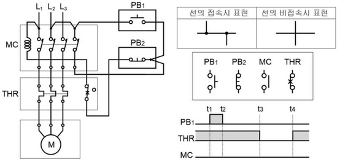
1. 시퀀스도로 표시하시오. (전선의 접속시 표현과 접점형태를 참고하여, 자기유지를 완성하시오.) (3점)
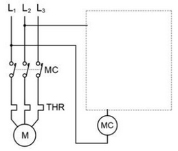
2. 시간 t_3에 열동 계전기가 작동하고, 시간 \(t_4\)에서 수동으로 복귀하였다. 이때의 동작을 타임차트로 표시하시오. (2점)
[14번 해설] 개념 이해형+도면 해석 / 난이도 中
[정답]
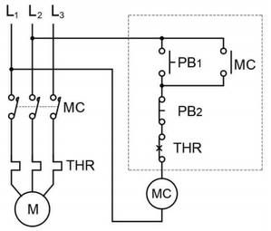
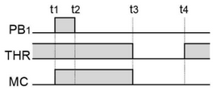
[부분점수]
| 점수 | 세부기준 |
|---|---|
| 5점 | 소문항 2개 중 2문항의 정답이 맞으면 5점 획득 |
| 3점 | 소문항 2개 중 1)번 문항의 정답이 맞으면 3점 획득 |
| 2점 | 소문항 2개 중 2)번 문항의 정답이 맞으면 2점 획득 |
| 0점 | 소문항 2개 모두 정답과 맞지 않는 경우 |
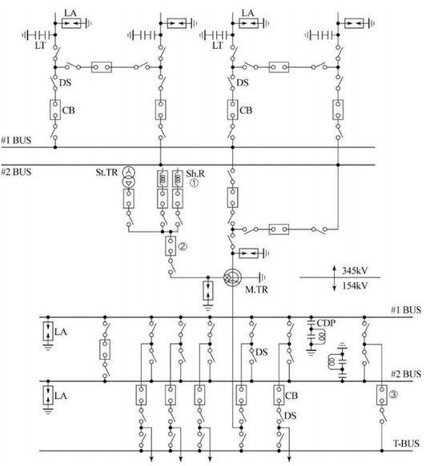
[주변압기]
단권변압기 345[kV]/154[kV]/23[kV] (Y-Y-Δ)
166.7[MVA]x3대≒500[MVA],
OLTC부 %임피던스(500[MVA] 기준): 1차~2차: 10[%]
[차단기]
362[kV] GCB 25[GVA] 4000[A]~2000[A]
170[kV] GCB 15[GVA] 4000[A]~2000[A]
25.8[kV] VCB ( ) [MVA] 2500[A]~1200[A]
[단로기]
362[kV] DS 4000[A]~2000[A]
170[kV] DS 4000[A]~2000[A]
25.8[kV] DS 2500[A]~1200[A]
[분로 리액터]
23[kV] Sh.R 30[MVAR]
[피뢰기]
288[kV] LA 10[kA]
144[kV] LA 10[kA]
21[kV] LA 10[kA]
[주모선]
Al-Tube 200φ
가. 도면의 345[kV]측 모선 방식은 어떤 모선 방식인가? (1점)
[정답]
나. 도면에서 ①번 기기의 설치 목적은 무엇인가? (1점)
[정답]
다. 도면에 주어진 제원을 참조하여 주변압기에 대한 등가 %임피던스(\(Z_H, Z_M, Z_L\))를 구하고, ②번 23[kV] VCB의 차단용량을 계산하시오. (단, 그림과 같은 임피던스 회로는 100[MVA] 기준이다.) (6점)
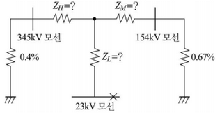
① 등가 %임피던스 (\(Z_H, Z_M, Z_L\)) (3점)
[정답]
② 23[kV] VCB 차단용량 (3점)
[정답]
라. 도면의 345[kV] GCB에 내장된 계전기용 BCT의 오차계급은 C800이다 부담은 몇 [VA]인가? (2점)
[정답]
마. 도면의 ③번 차단기의 설치 목적을 설명하시오. (1점)
[정답]
바. 도면의 주변압기 1 Bank(단상x3대)을 증설하여 병렬운전시키고자 한다. 이때 병렬운전을 할 수 있는 조건 4가지를 쓰시오. (2점)
[정답]
①
②
③
④
가. [정답] 2중 모선 방식
나. [정답] 페란티 현상 방지
다.
① 등가 %임피던스 (\(Z_H, Z_M, Z_L\))
[계산과정] 500 [MVA] 기준 %임피던스로 변환한다.
1차~2차 \(\%Z*{HM} = 10[\%], 2차~3차 \%Z*{ML}\) = 67[%],
1차~3차 \(\%Z_{HL}\) = 78[%]
100[MVA] 기준으로 환산한다.
\[ Z*{HM} = 10 \times \frac{100}{500} = 2[\%], Z*{ML} = 67 \times \frac{100}{500} = 13.4[\%], Z\_{HL} = 78 \times \frac{100}{500} = 15.6[\%] \]
등가 임피던스는
\[ \%Z*H = \frac{1}{2}(Z*{HM} + Z*{HL} - Z*{ML}) = \frac{1}{2}(2 + 15.6 - 13.4) = 2.1[\%] \] \[ \%Z*M = \frac{1}{2}(Z*{HM} + Z*{ML} - Z*{HL}) = \frac{1}{2}(2 + 13.4 - 15.6) = -0.1[\%] \] \[ \%Z*L = \frac{1}{2}(Z*{ML} + Z*{HL} - Z*{HM}) = \frac{1}{2}(13.4 + 15.6 - 2) = 13.5[\%] \]
[정답] $%Z_H: 2.1[%], %Z_M: -0.1[%], %Z_L: 13.5[%] $
② 23[kV] VCB 차단용량
[계산과정] 23[kV] VCB 설치점까지 전체 임피던스를 계산한다.
\[ \%Z = \frac{(2.1 + 0.4) \times (-0.1 + 0.67)}{(2.1 + 0.4) + (-0.1 + 0.67)} + 13.5 = 13.96[%] \]
\[ 차단용량 P_s = \frac{100}{13.96} \times 100 = 716.33[MVA] \]
[정답] 차단용량: 716.33[MVA]
라. 오차 계급이 C800일 때의 부담
[계산과정] 오차 계급이 C800일 때, 임피던스는 8[Ω]이고, (2차에 정격전류 5[A]의 20배 100[A]가 흐를 때의 2차 단자전압이 800[V]가 되므로 임피던스는 8[Ω]이 된다.)
CT 2차 측 전류는 5[A]이다. $I^2Z = 5^2 = 200[VA] $
[정답] 200[VA]
마. [정답] 모선 절체 또는 모선 점검 시 무정전으로 점검하기 위해 사용한다.
바. 변압기의 병렬운전 조건
[정답]
① 극성이 같을 것
② 1, 2차 정격 전압(권수비)이 같을 것
③ %임피던스 강하가 같을 것
④ 변압기 내부 저항과 리액턴스의 비가 같을 것
[부분점수]
| 점수 | 세부기준 |
|---|---|
| 13점 | 소문항 6개 중 6문항의 계산과정과 정답이 모두 맞으면 13점 획득 |
| 1점 | 소문항 가, 나, 마의 정답이 맞으면 1개 당 각각 1점 획득 |
| 3점 | 소문항 다 ①, ②의 계산과정과 정답이 모두 맞으면 각각 3점씩 획득 |
| 2점 | 소문항 라의 정답이 맞으면 2점 획득 |
| 2점 | 소문항 바의 정답 4개 중 4개 맞으면 2점, 2~3개 맞으면 1점 획득 |
| 0점 | 소문항 모두 정답과 맞지 않는 경우 |
[정답]
[부분점수]
| 점수 | 세부기준 |
|---|---|
| 6점 | 소문항 3개 중 정답이 모두 맞으면 6점 획득 |
| 4점 | 소문항 3개 중 정답이 2개 맞으면 4점 획득 |
| 2점 | 소문항 3개 중 정답이 1개 맞으면 2점 획득 |
| 0점 | 소문항 3개 중 정답이 모두 틀리면 0점 |
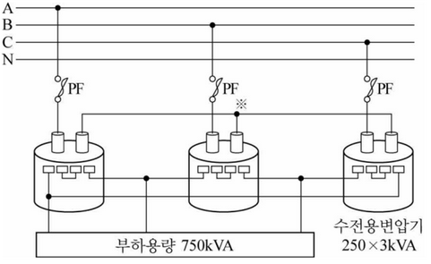
가. 1) 변압기 1차측 Y결선의 중성점을 전로로 N선에 연결해야 하는가? 연결해서는 안되는가? (1점)
[정답]
[정답]
나. 전력퓨즈의 용량은 몇 [A]인지 선정하시오. (단, 1.25배의 여유를 준다.) (3점)
퓨즈의 정격용량 [A]: 1, 3, 5, 10, 15, 20, 30, 40, 50, 60, 75, 100
[정답]
가. [정답]
나. 전력퓨즈의 용량 계산
\[ 전부하 전류 I = \frac{750}{\sqrt{3} \times 22.9} = 18.91 [A] \]
전부하 전류의 1.25배의 여유를 주어야 하므로,
\[ 퓨즈용량 = 18.91 x 1.25 = 23.64 [A] \]
[정답] 30[A] 퓨즈 선정
[부분점수]
| 점수 | 세부기준 |
|---|---|
| 6점 | 소문항 2개 중 정답이 모두 맞으면 6점 획득 |
| 1점 | 소문항 가. 1)이 정답이면 1점 획득 |
| 2점 | 소문항 가. 2)가 정답이면 2점 획득 |
| 3점 | 소문항 나의 계산과정과 정답이 모두 맞으면 3점 획득 |
| 0점 | 소문항 모두 정답이 아니면 0점 |
| 설비용량 [kW] | 수용률 | 부등률 | 역률 | |
|---|---|---|---|---|
| 전등부하 | 60 | 80 | - | 95 |
| 전열부하 | 40 | 50 | - | 90 |
| 동력부하 | 70 | 40 | 1.4 | 90 |
변압기의 표준용량 [kVA]: 50, 75, 100, 150, 200, 300
[정답]
[18번 해설] 복합 계산형 / 난이도 中
유효전력 $P = 60 + 40 + = 88 [kW] $
무효전력$ P_r = 60 + 40 + = 39.02 [kVar] $
변압기 용량 $P_a = = 96.26 [kVA] $
[정답] 100[kVA] 선정
[부분점수]
| 점수 | 세부기준 |
|---|---|
| 5점 | 계산과정과 정답이 모두 맞으면 6점 획득 |
| 0점 | 계산과정과 정답에 오류가 있는 경우 |